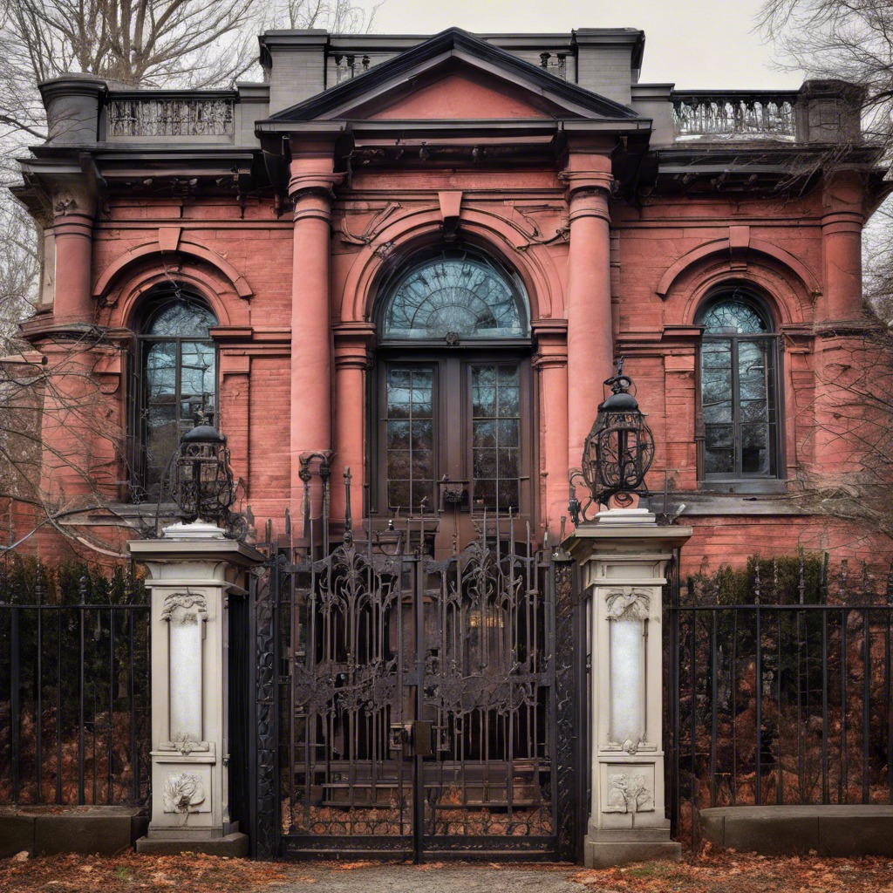

About Us

Welcome Seekers to Arkham Public Library!
Nestled in the heart of the historic town of Arkham, the library stands as a bastion of knowledge and enlightenment. Founded in 1714 by the Ward Family, our library has been serving the curious minds of Arkham and beyond for generations. Extensive caves found beneath the library implies this was a site of interest centuries before the town of Arkham was founded.
Our Collection
Step into the halls of our library and embark on a journey through time and space. Our extensive collection spans a wide range of subjects, from ancient lore and arcane texts to modern science, technology, and literature. Explore the mysteries of the cosmos, delve into the occult, or lose yourself in the pages of timeless classics—all within the walls of our hallowed institution.
Community Hub
More than just a repository of books, the Arkham Library is a vibrant community hub where scholars, students, and seekers of knowledge come together to exchange ideas and engage in intellectual discourse. Attend one of our many lectures, workshops, or book clubs, and connect with fellow enthusiasts who share your passion for discovery. And don’t fear, we haven’t forgotten about our junior members! From our young astronomers club to Malachi’s hide and seek, there is always something happening!
Arkham's Legacy
As proud residents of Arkham, we honor the rich history and cultural heritage of our town. From the shadowed streets of French Hill to the mysterious depths of the Miskatonic River, Arkham holds countless secrets waiting to be uncovered. Join us as we delve into the history and folklore of our beloved hometown, and discover the hidden truths that lie beneath its surface.
Visit Us
Whether you're a longtime resident of Arkham or a curious traveler passing through, we invite you to visit the Arkham Public Library and experience the wonder and magic that awaits within our walls. Our knowledgeable staff is always on hand to assist you in your quest for knowledge, and our doors are open to all.